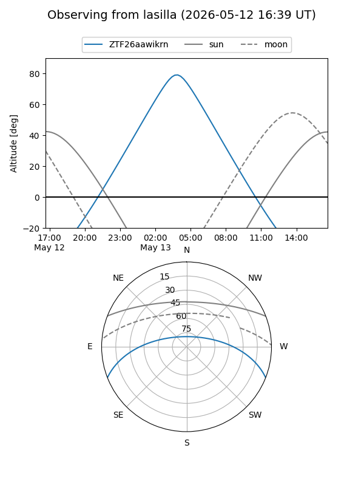
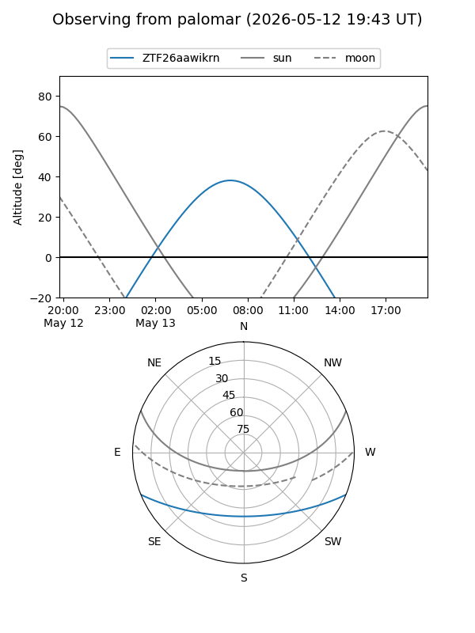

ZTF26aawikrn
Target ZTF26aawikrn at 2026-05-13 06:30
Aliases and brokers:
FINK: link
Lasair: link
ALeRCE: link
alt names
ZTF26aawikrn (ztf,fink_ztf)
Coordinates:
equatorial (ra, dec) = 217.0238,-18.37324
equatorial (HMS+DMS) = 14:28:05.71,-18:22:23.67
galactic (l, b) = (332.8411,+38.82039)
Flags:
Photometry:
last ztfg=17.55
1 ztfg detections
Lightcurve
Visibility


Additional plots